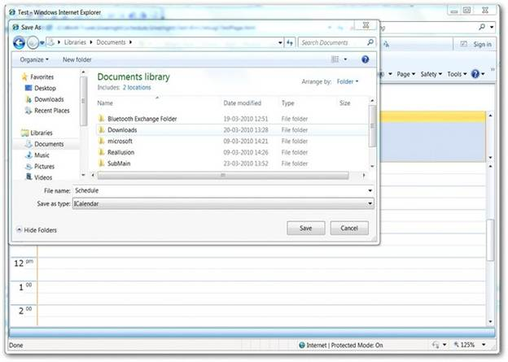
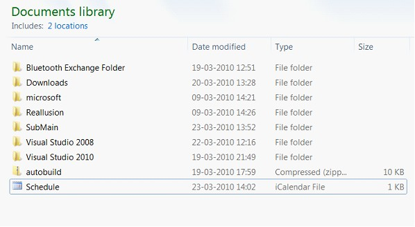
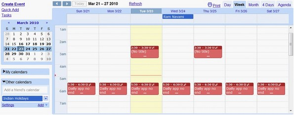
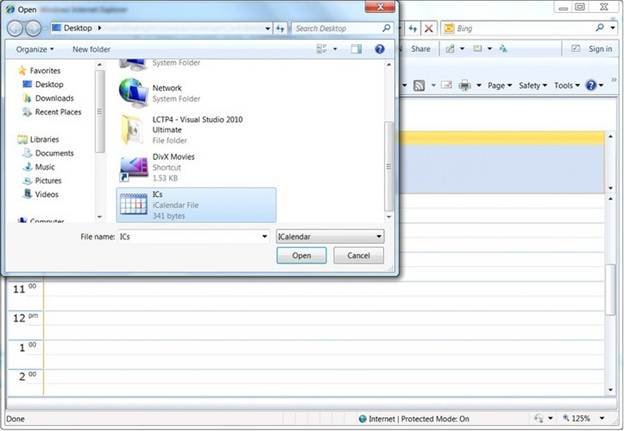
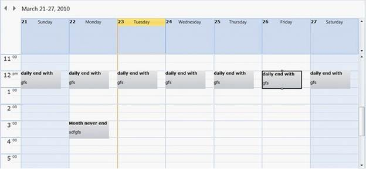

The schedule control allows users to export or import appointments and events as an .ics files. Appointments and events scheduled with the control can be exported as an .ics file and opened or imported in other schedulers such as Microsoft Outlook , Google Calendar, or any other scheduler supporting . ics files.
Similarly, files exported from other schedulers can also be imported into Essential Schedule.
The code given below demonstrates how to import and export .ics files.
Code for implementing importing and exporting
|
ScheduleControl.ImportICS(); ScheduleControl.ExportICS();
[Path = img/Reminder] |
Exporting in the schedule control
When the export function is called, a dialog box opens for selecting the location where the file has to be exported.

Figure 26: Export Dialog Box
The imported .ics file will be saved in specified location.

Figure 27: Imported Files Saved
These exported files can then be imported in any other scheduler, such as Microsoft Outlook. Silmilarly, you can import .ical files from other schedulers.

Figure 28: Import Exported Files in Any Other Scheduler
If the imported calendar has already been given a name, it can be imported into the schedule control by using the method ImportICS, which will open a dialog for browsing to the location, as seen below.

Figure 29: ImportICS Dialog Box
Selecting the .ics file will result in adding appointments from the file to the schedule control, as shown below.

Figure 30: .ics file Added as Appointments
Exporting to CSV Format
Apart from exporting .ics files, the schedule control supports exporting to CSV format as well; this process is similar to that of .ics file exporting, except the code for exporting is different.
Code for Exporting to CSV
|
[C#] ScheduleControl.ExportCSV(); |
Once the exported CSV file is opened in a spreadsheet application like Microsoft Excel or OpenOfficeCalc, appointments can be entered in tabular format.